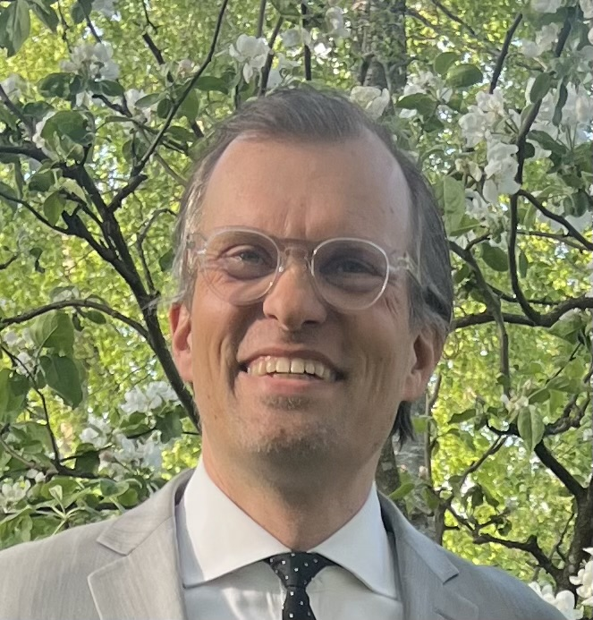
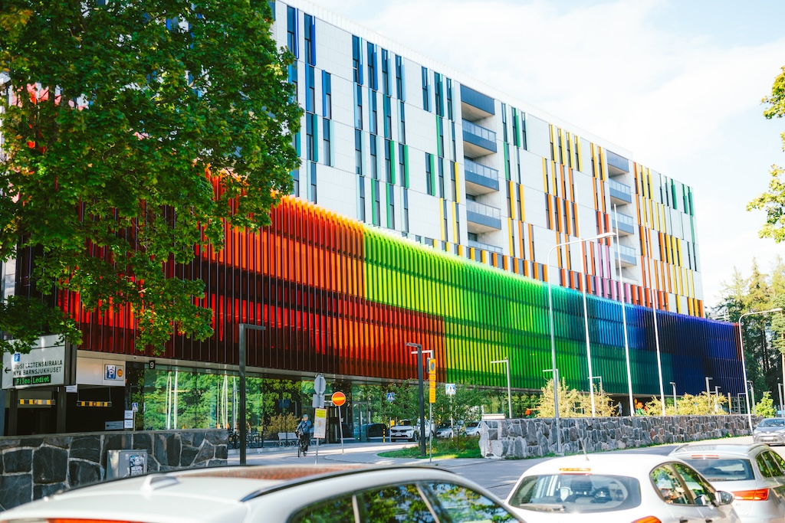
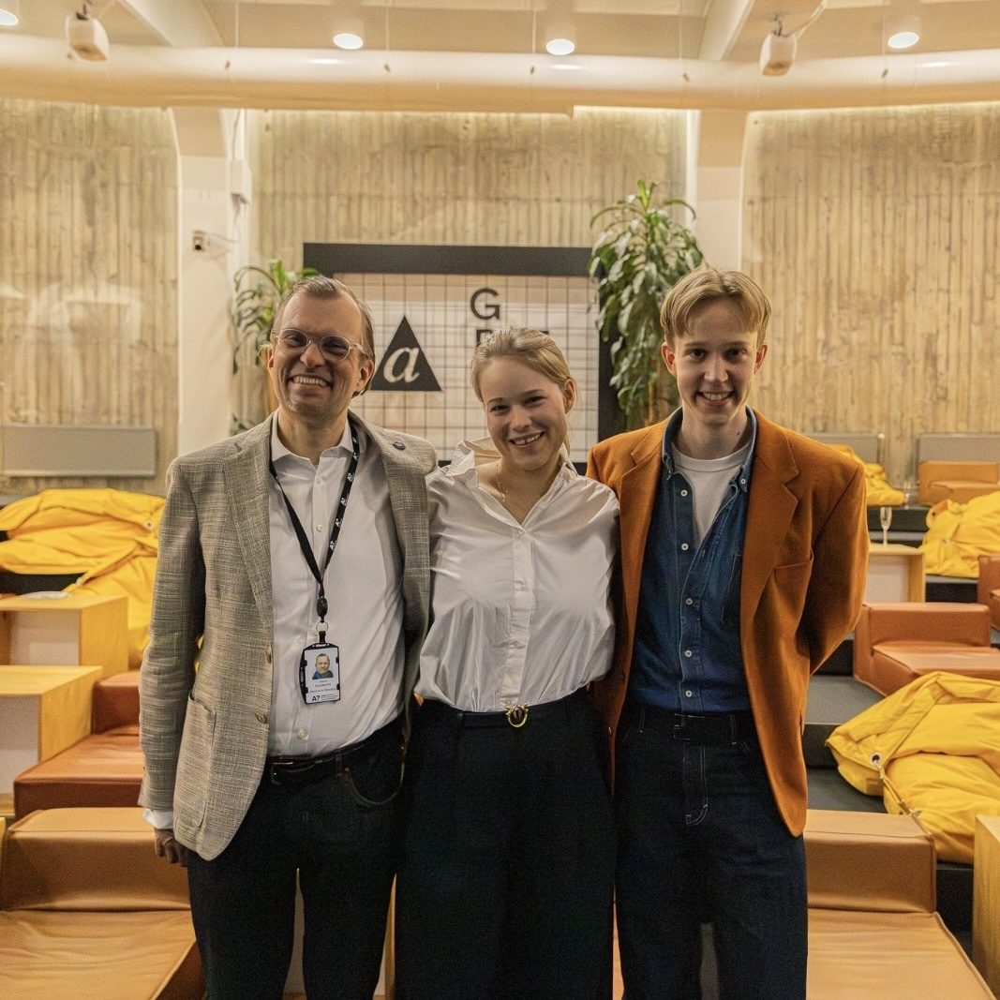
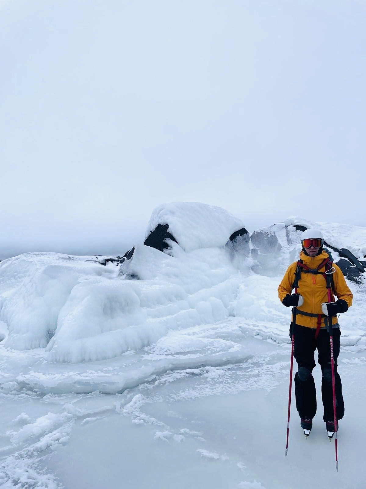
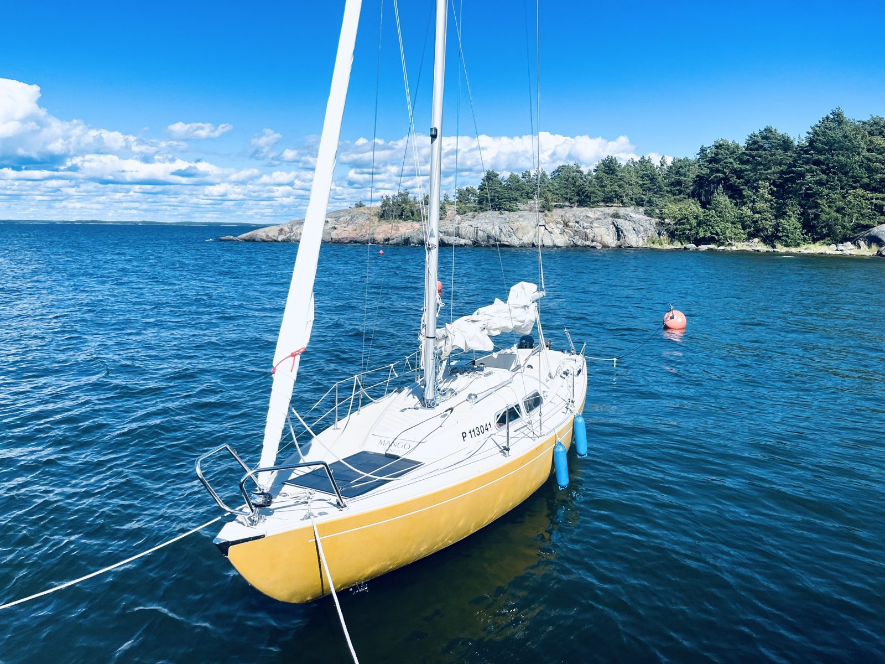

Executive Director, New Children's Hospital Foundation, Helsinki — this fall, Visiting Fulbright Scholar at Boston Children's Hospital and MIT's Hood Pediatric Innovation Hub.
I'm spending autumn 2026 in Boston studying how one of the world's leading pediatric-innovation ecosystems turns research, philanthropy and clinical practice into better care for children — and hoping to help build a lasting collaboration between Boston's innovation ecosystem and Finland's children's-health sector, not just a one-way study visit.

FALL '26About
I work at the intersection of pediatric healthcare, innovation and philanthropy — leading foundations that fund medical research in Finland and the development of new, effective forms of care at the New Children's Hospital, and teaching the next generation how healthcare actually gets built and funded.

The Fulbright Project
Developing practices of innovation for 21st-century pediatrics.
This Fulbright Mid-Career Professional Development project centers on learning from Boston Children's Hospital and Harvard Medical School to advance pediatric innovation and impactful fundraising in Finland — studying US models in healthcare technology, innovation practice and donor engagement, then adapting what transfers into new strategies, ethical governance and international collaboration for Finnish children's hospitals and foundations. An extension into pediatric innovation at MIT's Hood Pediatric Innovation Hub is also confirmed.
How public-led healthcare systems like Finland's can safely adopt innovation from private startups, and what funding and program models keep it both impactful and safe for children.
Policies for donor relationships that protect scientific independence, equitable access and children's rights, with clear, transparent communication about how gifts are used.
Gathering and adapting US practice into models for program design, management and evaluation that other Finnish health foundations can put to use.
Building lasting collaboration with US and European partners through workshops, lectures and joint publications, not just a one-way study trip.
Why Boston Children's & Harvard & MIT
Boston Children's Hospital and Harvard Medical School pair deep philanthropic infrastructure with institutional commitment to translating research into scalable, clinically impactful care — exactly the combination Finland's foundation sector is still building. MIT adds a third layer: its Health and Life Sciences Collaborative (MIT HEALS), launched in 2024, pulls engineering, biology and clinical medicine into the same pipeline, with the Hood Pediatric Innovation Hub as its pediatric-specific arm. My host contact at BCH is Shea Asfaw, Executive Director of CEO Strategic Support, under a letter of invitation from CEO Kevin B. Churchwell, MD. My host contact at MIT's Hood Pediatric Innovation Hub is Dr. Joseph J. Frassica, the Hub's Executive Director. On the Harvard side, my current contact is Alessio Morley-Fletcher, MD, MMSc, Co-Chair of Boston Children's Hospital's Effective AI Committee and Lead for Human-Centred AI at the Harvard Health Systems Innovation Lab — a connection still to be formalized into an invitation.
Background
I direct the New Children's Hospital Foundation and lead the Biomedicum Helsinki Foundation and the Finnish Medical Foundation part-time — the latest of five science foundations I've headed since 2002. I teach at Aalto University as an Executive in Residence with the Department of Industrial Engineering and Management, co-teaching the HealthTech Linkage course with Professor Jens Schmidt, Satu Torto, and Amos Bonsdorff. This September I co-organized Finland's i4KIDS project, hosting this year's European Paediatric Innovation Day in Helsinki, with Helsinki University Hospital.
Alongside the foundation world, I've spent over 15 years in the startup ecosystem — co-founding companies including Hookie Technologies and Kyyti Group, and serving as CEO of the Startup Foundation, parent of Slush, Junction and Maria 01, through the pandemic. My background combines an M.Sc. (Eng) from Helsinki University of Technology and KTH Stockholm with an Executive MBA from Henley Business School, the Certified European Financial Analyst (CEFA) qualification, and Stanford Graduate School of Business's Executive Program for Nonprofit Leaders. I currently chair the New Children's Hospital's real-estate corporation and sit on the board of the Erkki Paasikivi Foundation, having previously served on the board of the Association of Finnish Foundations. I also mentor founders as part of the Eir Accelerator, Finland's women's-health startup program, alongside Helsinki Incubators and the Helsinki Female Tech Founder Frontrunners program.
Outside work, I'm usually outdoors — hiking, sea kayaking and sailing around the Finnish archipelago — or at the opera, a dance performance, or a gallery. I also keep a garden, and have a long-running interest in Italian language and culture.



Institutions
Owns and supports Finland's New Children's Hospital, part of HUS Helsinki University Hospital, funding pediatric research, clinical innovation and training. Recent work: co-organizing the first Pediatric Innovation Challenge and European Paediatric Innovation Day with HUS. Currently raising funding for pediatric heart-disease treatment, art-therapy and pediatric robotic surgery projects.
Promotes research in clinical medicine and the health sciences, granting funding each year from a roughly $15M portfolio to researchers at the University of Helsinki and Helsinki University Hospital at every career stage. The foundation is named for, and helps coordinate use of, Biomedicum Helsinki itself — a biomedical research and teaching campus in Meilahti (two buildings, opened 2001 and 2008) housing the University of Helsinki's Faculty of Medicine, HUS, the Finnish Institute for Molecular Medicine (FIMM), and several other life-science institutes and companies under one roof.
Formed in 2010 by merging Helsinki University of Technology, the Helsinki School of Economics and the University of Art and Design Helsinki into one university spanning engineering, business, and art and design — a combination, plus a startup culture that hosts Slush, that has earned it a reputation as something like a Nordic MIT. Its HealthTech Linkage course, run jointly with the University of Helsinki, connects Master's and PhD students with how the health sector actually works commercially.
Founded in 1960 by the Finnish Medical Society Duodecim, it supports young medical doctoral and postdoctoral researchers at the start of an independent research career — funding time to focus on research, doctoral researchers' research visits to top international universities such as Harvard Medical School, and the founding of new research groups. Since 2016, the foundation has granted roughly $28M toward this work, and grown its assets to about $135M. It's also one of the member foundations of Finland's national Post Doc Pool ↗, which co-funds Finnish postdoctoral researchers' 6–24 month research periods abroad.
Finnish Pediatric Care
Finland's modern child-health system traces back to one physician: Arvo Ylppö, who trained in neonatal medicine in Berlin before returning to Helsinki to run the Children's Castle (Lastenlinna) children's hospital from 1920 to 1963. In 1922 he opened the country's first neuvola — a free maternity and child-health clinic — in Kallio, a working-class district where child mortality fell from 15% to 3% within three years. A 1944 law made every Finnish municipality responsible for running one; today 99.7% of pregnant women use the service ↗, and it has helped take national infant mortality from roughly 67 per 1,000 live births in the 1930s–40s to about 1.8 in 2021 — among the lowest rates in the world. The Children's Castle itself treated patients for a century before closing in 2018, the same year the New Children's Hospital opened on the Meilahti campus.
That same hospital is where a lot of the current breakthroughs are happening. HUS has logged over 10,000 robot-assisted surgeries ↗ since introducing its first system in 2009, and extended the program into pediatric surgery and pediatric urology in 2019. The New Children's Hospital Foundation's current priorities — pediatric heart-disease treatment, pediatric robotic surgery and art-therapy — sit inside a hospital that was deliberately designed around a strong digital-health backbone and an art-and-play-based healing environment, rather than retrofitted onto an older building.
For Hosts & Collaborators
A Fulbright fellowship reads as one-way, but Finland and the Nordics carry hard-won knowledge of their own. If you're hosting me this fall, here's what I hope to offer, the conversations I'd like to have, and the questions I'm carrying into every meeting.
Concretely, I'd welcome conversations about:
What actually counts as innovation here — products, care processes, digital tools, new therapies — and how do you promote open adoption of it across a children's hospital?
What's the rationale for innovation at a children's hospital, and how do you actually measure whether it worked?
How do you pitch a donor on innovation instead of research, and who protects scientific priorities when a bet runs long or fails?
Where do good ideas — from a nurse's or family's suggestion to a clinician-innovator's project — actually get stuck, and who funds and governs the path through?
What would a standing partnership instrument with a foreign children's-health foundation need to look like — and what could a network like ECHO, the European Children's Hospitals Organisation, actually offer Boston back?
Fellowship Arc
Co-organizing the i4KIDS project, hosting this year's European Paediatric Innovation Day, before departure.
Onboarding and orientation with the Strategic Support team.
Accelerator visits, job shadowing and interviews with innovation, research and fundraising leads at BCH and Harvard.
Invited gathering of health-innovation leaders in pediatric and maternal health innovation.
Global Working Sessions and the Anniversary Gala at Stanford.
A look at BCH's AI and innovation work, with introductions to the team.
Presenting and exploring collaboration with the Hood Hub team.
CHOP Foundation, Children's National Hospital, Plug and Play, and others.
"Celebrating 250 Years of America: The Declaration of Independence and U.S. Founders" — a US Department of State / IIE seminar to Fulbright scholars from all fields.
Findings synthesized and shared with Finnish hospitals and foundations via workshops, lectures and publications.